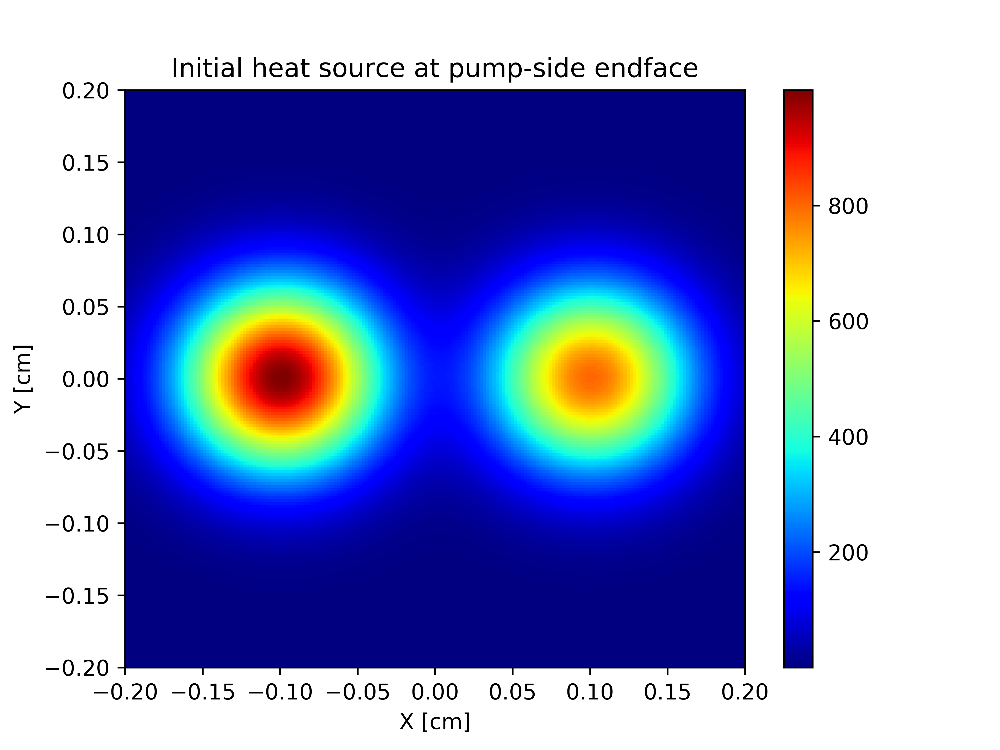

photonicslab.heateqn.HeatEqn2D.add_gaussian¶
-
HeatEqn2D.add_gaussian(center_x=0.0, center_y=0.0, q=None, nt_start=0, nt_end=None, b_x=250, b_y=250)[source]¶ Adds a Gaussian heat source to the current instance of the heateqn2D object.
- Parameters
center_x (float) – X co-ordinate of the center of the Gaussian heat source [cm].
center_y (float) – Y co-ordinate of the center of the Gaussian heat source [cm].
q (float) – Amplitude of Gaussian heat source. Uses class constructor default
Qinit.nt_start (float) – Starting time-step from which to add source.
nt_end (float) – Ending time-step after which source no longer contributes to solver.
b_x (float) – Gaussian shape in x-direction.
b_y (float) – Gaussian shape in the y-direction.
- Raises
ValueError – If too much power is provided.
ValueError – If the coordinates of the position of the heat source are out of bounds of crystal face.
Example
Adding two adjacent and non-equal sources.
>>> import photonicslab >>> myGaussianPair = photonicslab.heateqn.HeatEqn2D() >>> myGaussianPair.add_gaussian_source() >>> myGaussianPair.add_gaussian_source(q=800)

Pair of adjacent Gaussian sources.¶